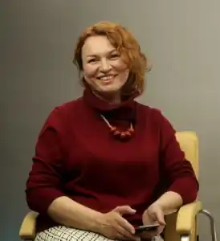

Тетяна Стус (Щербаченко), автор дитячих книжок, літературний критик, редактор. Народилася на Луганщині в родині вчителів 21.02.1976 року. Продовжуючи традиції родини, закінчила Луганський педагогічний інститут ім. Т.Шевченка, – мала б стати вчителькою в третьому поколінні. Певний час рацювала в школі (Луганськ). Переїхала до Києва (2001 р.). Працювала журналістом, редактором відділу, заступником головного редактора (журнали "Книжник-review", "Київська Русь"), головним редактором (дитячий журнал "Соняшник").
Вивчає історію україської дитячої літератури в Інституті літератури ім.Т.Г.Шевченка НАН України.
Енциклопедія для дівчаток "Панночка" – рекордсмен продажів видань для дітей. Загальний проданий наклад перевищує 30 тис. примірників. Авторка дівчачого бестселера "Панночка" (2007, 2008, 2010, 2012), оповідань "Пуп Землі, або Як Даринка світ рятувала" (2007), "Як не заблукати в Павутині" (2013), "Біла, Синя та інші" (2014), "Їжак Вільгельм" (2016), "Де Ойра?" (2017), "Письмонавтика" (2017), "День народження" (2017), "Таємна змова" (2018), "Моя Ба" (2018) та інших книжок (до 2016 року – під прізвищем "Щербаченко"). Співавторка збірок оповідань для підлітків "Чат для дівчат" (Видавництво Старого Лева, 2016) та "Окуляри і кролик-гном" ("Братське", 2018). "Їжак Вільгельм" був відзначений найвищою книжковою щорічною нагородою – премією Президента України "Українська книжка року" (2016). Наступного року "Де Ойра?" була визнана найкращою книжкою для дітей у конкурсі "Еспресо. Вибір читачів". 2018 року книжка-картинка "Моя Ба" вийшла у фінал конкурсу "Еспресо. Вибір читачів". Від 2017 року співпрацює з видавництвом "Ранок". Тетяна Стус керівниця проектів: дбайливої серії для самостійного читання "Читальня" та серії книжок для "розвитку емоційного інтелекту дитини" "Слухай серцем". Власну мету в літературі для дітей вбачає в тому, щоб "сказати дітям те, про що не встигаємо з ними поговорити". Член журі конкурсів дитячої літератури, упорядниця та укладачка "Хрестоматії сучасної української дитячої літератури для читання в 1,2 та 3,4 класах" (2017).